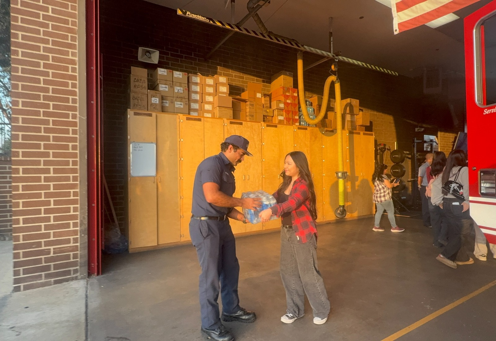

Join a chapter, support a local project, or start one at your school.
Project Pulmonary’s volunteer and chapter pathways are intentionally simple: find a nearby chapter through Instagram, help lead a hydration drive, or apply to launch a chapter if none exists in your area.

Three direct ways to take part in the mission.
Whether you are joining as a volunteer or building something new, the site gives people a clear path into the nonprofit.

Look on Instagram, find a nearby chapter, and ask how to support its work.
Existing chapters may already be running outreach events, hydration drives, or school presentations that need help.

Start a drive at your school and donate collected supplies to a local fire station.
This is one of the clearest ways students can contribute locally while supporting firefighter wellness.

If no chapter exists near you, build one at your high school.
New chapters extend Project Pulmonary’s reach and create lasting local leadership opportunities.
What chapter members do
- Organize hydration drives and local outreach projects.
- Coordinate classroom-based Letters for Lungs activities.
- Represent Project Pulmonary at school and community events.
- Build local partnerships that keep firefighter support visible.
If there is no chapter near you, apply through our chapter form to begin one at your school.

Frequently asked questions
These FAQs make the join process feel more concrete and reduce uncertainty for new supporters.